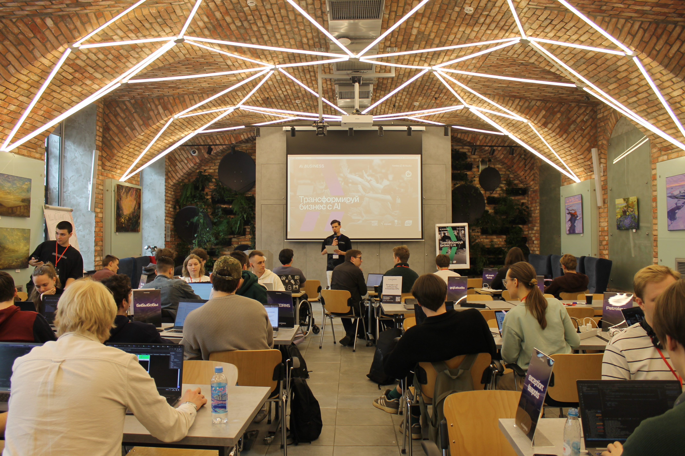
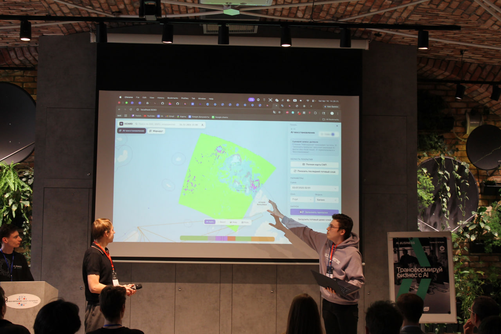
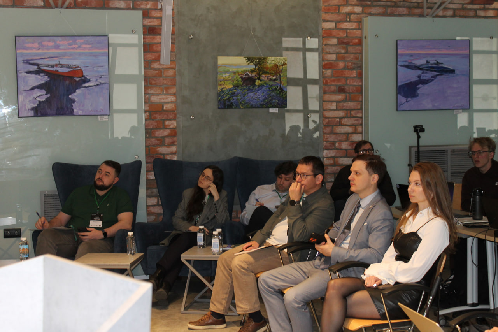
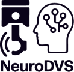
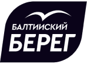
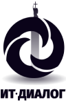
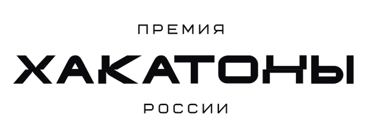
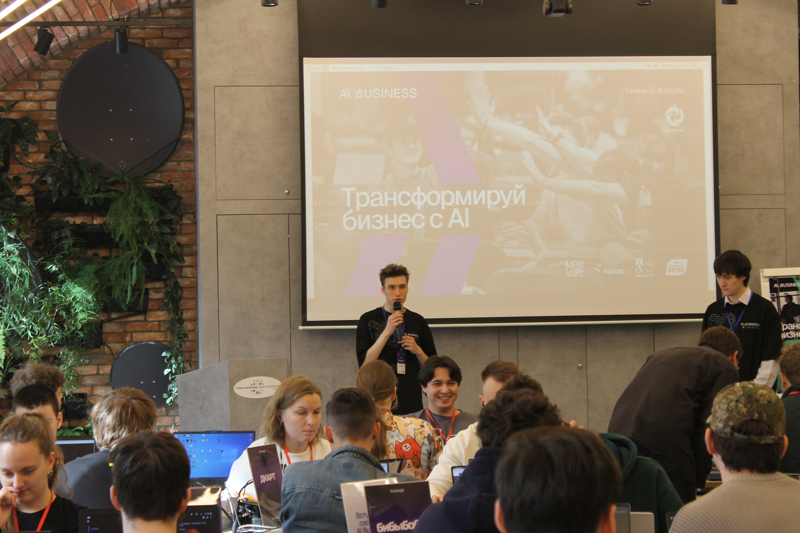
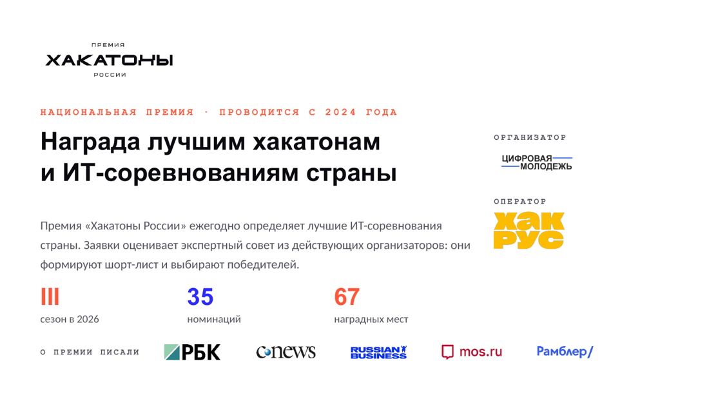

Создаём пространство, где бизнес встречается с AI-разработчиками, чтобы обмениваться опытом, исследовать новые возможности и развивать AI-проекты.
Публикуем интервью с командами, разбираем реальные AI-проекты, технологии, архитектуру и экономику решений.
Объединяем компании и технологические команды для исследования новых возможностей ИИ, решения отраслевых задач и разработки AI-проектов.




Хакатон под реальные задачи бизнеса
Лауреат премии «Хакатоны России»
Партнеры и результаты →



Создаём пространство для общения бизнеса и разработчиков: профессиональные встречи, воркшопы, обмен практиками и технологическими идеями.
Присоединяйтесь к сообществу
Разборы проектов, анонсы событий, и другие полезные материалы
Изучаем технологии, разбираем реальные проекты, публикуем исследования, интервью и мнения экспертов AI-индустрии.
Объединяем индустриальных партнеров и технологические команды для разработки и тестирования новых экспериментальных решений.
Компании с реальными задачами для AI
Нашими партнёрами становятся компании, которые приходят из интереса найти новые подходы к реальным задачам.
Зачем бизнесу хакатон — их словами
Средняя оценка партнёров
Хакатон однозначно снижает трудозатраты на поиск команды. Плюс — можно посмотреть разные подходы к решению одной задачи.
Сергей Зубков · Генеральный директор, VIZARDЗадача исследовательская — нужно было понять, нужно ли вообще внедрять ML и в каком формате. Хакатон дал именно этот ответ.
Мария Зиновьева · Руководитель группы BI-аналитики, MediascopeИскали тест для проверки гипотез — нашли именно это. AI-генералы есть, а вот рядовых в боевые группы и не хватало.
Александр Семенов · CEO, НейроДВСЦель — поучаствовать в новом формате, посмотреть как команды работают. Другие кейсы тоже интересно смотреть со стороны.
Максим Горланов · ИТ-директор, Балтийский Берег
Организация была на достойном уровне. Особенно заинтересовали два кейса: диагностика двигателей по звуку (НейроДВС) — технически интересная задача; и AI-помощник техподдержки (Балтийский Берег) — актуальная для любой компании бизнес-задача. Мы обязательно обсудим эти кейсы с коллегами. Приятно отметить, что хакатон продолжает давать эффект даже после завершения.
Павел Михновец · Заместитель директора по развитию, ГК «Люмэкс»Менторы — тимлиды команд, а не просто эксперты
- Менторы = тимлиды команд
- Заранее погружены в задачи и данные кейсов
- Помогают технической экспертизой и кодом, а не «советами со стороны»
- Ведут команды как руководители — от первого коммита до питча
- Никаких внешних трекеров, впервые увидевших задачу на открытии
оценка работы менторов участниками

AI-мэтчинг участников по компетенциям
Формирование команд полного цикла.
Роли участников
Опыт в AI-проектах
Статус участников
Высокие оценки именно там, где наш формат отличается
Крайне хорошая организация. Сильные технические менторы, помогали и подсказывали при необходимости.
Участник хакатонаПроводится впервые, но никаких проблем не заметил — хоть и имею большой опыт участия в кейс-конференциях, где обычно что-то идёт не так.
Участник хакатонаОбщение с менторами было действительно полезным. В отличие от многих хакатонов — все менторы имеют опыт участия и давали реальные советы.
Участник хакатонаМероприятие очень крутое, видно что организаторы сами часто участвуют в хакатонах и понимают что нужно для успешного решения.
Участник хакатонаРаботаем с лучшими в индустрии
Yandex AI Studio
Технологический партнёр. Предоставляет языковые модели и вычислительную инфраструктуру для всех команд хакатона.
Технологический партнёрЭкспертный клуб ИТ-Диалог
Экспертный клуб «ИТ-Диалог» — площадка для прямых коммуникаций власти и ИТ-бизнеса, профессиональное сообщество, управляемое самим бизнесом.
Партнёр по связям с бизнесом и государствомТочка кипения — Санкт-Петербург. ГУАП
Современная многофункциональная площадка для проведения образовательных, просветительских, дискуссионных и культурных мероприятий.
Площадка проведенияХакатон AI Business SPb — призёр премии «Хакатоны России»
Премия от организаторов АНО «Цифровая молодёжь» и Хакатоны.рус. Хакатон AI Business SPb отмечен среди 50+ хакатонов в двух номинациях:
«Лучший хакатон в сфере ИИ» — жюри высоко оценило сложность задач по машинному обучению и анализу данных. На хакатоне действительно были нетривиальные кейсы, требующие глубокой проработки и нестандартных подходов.
«Лучший промышленный хакатон» — здесь отметили прикладной характер: все решения были заточены под реальные бизнес-задачи, а не существовали как абстрактные прототипы.
